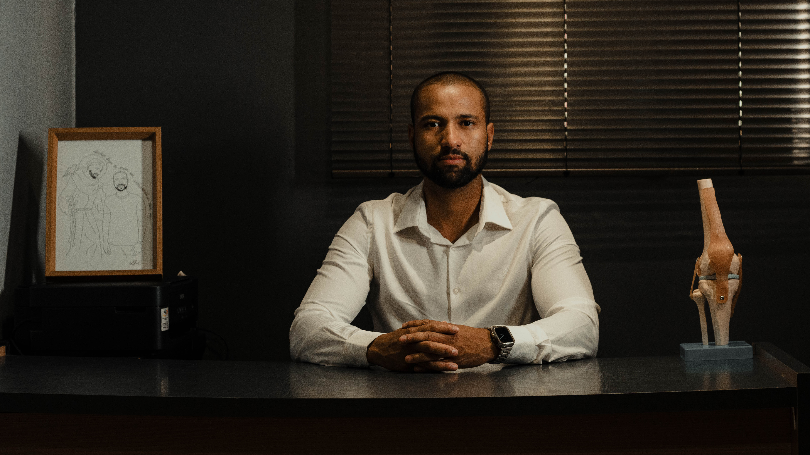

Especialista em reabilitação, fisioterapia esportiva e pós-operatório de joelho. Uma trajetória focada em devolver seu movimento com máxima precisão técnica.
Vídeo de Apresentação
Reabilitação não é sobre tratar o corpo inteiro de forma superficial. É sobre dominar uma articulação complexa.
O Dr. Marco Tavares não atua como um fisioterapeuta generalista. Sua formação e prática clínica são direcionadas exclusivamente para a saúde do joelho, garantindo um nível de aprofundamento e segurança que casos cirúrgicos, lesões esportivas e dores crônicas exigem.
Aqui, você encontra protocolos atualizados, avaliação criteriosa e um plano de tratamento pautado em evidências científicas de ponta.

A excelência exige foco. Conheça a jornada de especialização técnica.
Profundo conhecimento de mais de 32 técnicas cirúrgicas para garantir que os tecidos em cicatrização sejam protegidos durante o ganho de força e movimento.
Membro da SONAFE e especialista pelo COFITO. Foco em critérios objetivos para retorno seguro ao esporte, minimizando o risco de novas lesões.
Avaliação precisa que vai além da intuição clínica. Protocolos atualizados e respaldados pela ciência para tratamentos conservadores e cirúrgicos.
Transição para corrida - Pós-op de LCA
Avaliação biomecânica do salto
"Profissionalismo impecável. O Dr. Marco me passou uma segurança imensa durante o meu pós-operatório de LCA. A diferença que um especialista faz é nítida."
"Cheguei com dor crônica no joelho e saí entendendo meu problema e com um plano claro. Reabilitação séria e baseada em dados, sem enrolação."
"Voltei a correr sem dor graças ao trabalho focado do Dr. Marco. A estrutura e o atendimento são de primeiro mundo."